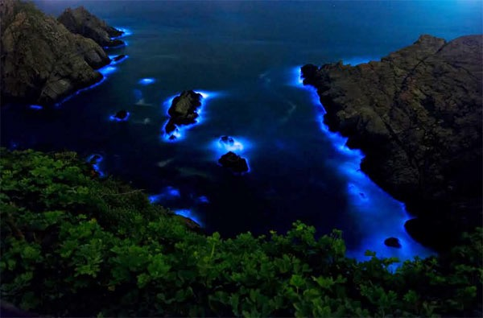
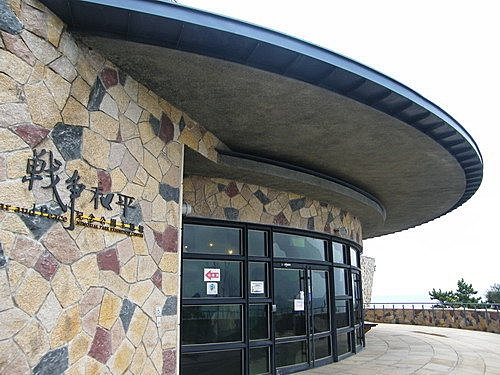
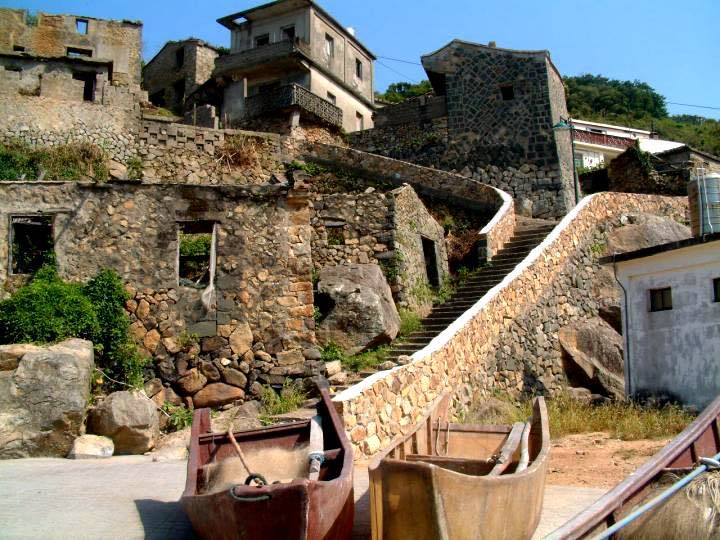
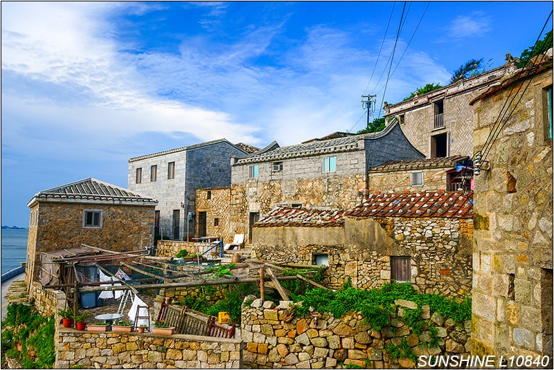
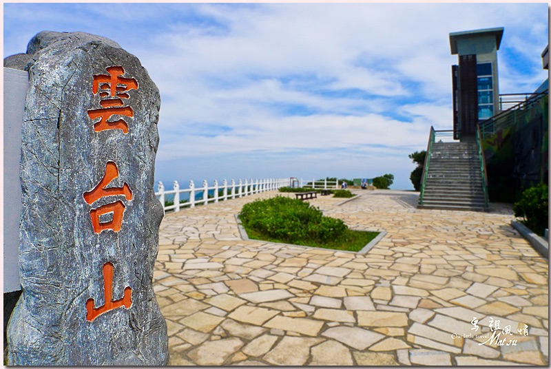
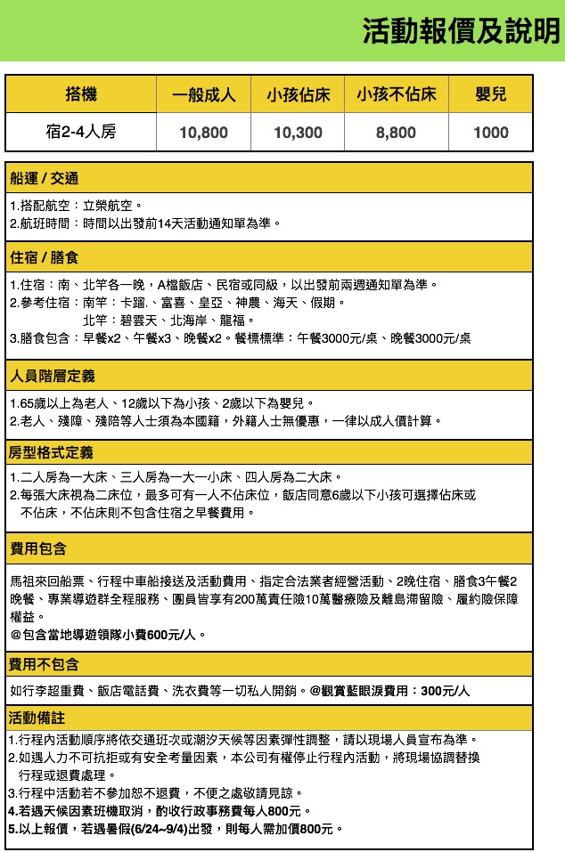

Toggle navigation
哇cow旅行
旅遊資訊站

讓旅遊更簡單
讓我們協助你，完成最簡單的旅遊！
馬祖閩式風情
第一天 台灣 → 南竿 → 北海坑道 → 204砲陣地 → 雲台山 → 津沙聚落
集合於松山機場，搭乘立榮班次，前往海上桃花源——馬祖，達後隨即展開閩東之旅。 前往~
《北海坑道》
把堅硬的花崗岩鑿成井字型交錯的坑道，還能容納百艘艦艇，真可說是鬼斧神工的蓋世之作，這也是金馬地區最大的坑道碼頭。深長的地底世界透著一股神秘氣息，配上坑道內的腳步聲、拉長的身影、水道徐徐的波動，氣氛令人著迷。
《204砲陣地》
全東南亞最大砲陣地
《雲台山》
標高248公尺，僅次於北竿壁山（標高298公尺），是南竿第一高峰，初春至夏初之雨季或霧季時，周遭山嵐環繞，呈現隱約之美。雲台山已經列為台灣小百岳之一，是登高遠眺馬祖列島與大陸山河的最佳景點，氣候晴朗時，大陸北茭半島清晰可見。
《津沙聚落》
舊稱「金沙」，意指金色沙灘，由於地理位置與大陸相當接近，往來海上作業的船隻總將港口點綴得熱鬧萬分。
《馬港天后宮》
馬祖地區香火最盛也最氣派的廟宇，據文獻資料推斷最遲在清嘉慶年間即已肇建，廟中供桌前方的石棺，相傳為媽祖娘娘葬身 的墓穴。請別忘了來此上香求平安。
早餐：Ｘ
中餐：風味午餐300/人
晚餐：風味晚餐300/人


第二天 南竿 → 馬港天后宮 → 馬祖巨神像→ 馬祖酒廠 → 八八坑道 →福山照壁
喚早餐後~參觀
《媽祖巨神像》
由365塊花崗石建構而成，寓有「365日、日日平安」之意，以及神像高度28.8公尺，正好是馬祖四鄉五島的總面積。馬祖全縣面積過去一直是以28.8平方公里為計算，但經過最新測量，實際面積為29.6平方公里。
業者在媽祖巨神像上加上避雷針後，其高度亦為 29.6公尺已申請金氏紀錄為世界第1高石造托燈媽祖神像，馬祖的地名與與媽祖的關係可說是密不可分，從神象的興建中，即可了解到馬祖人民對於媽祖信仰的虔誠，因為這座神像從提案到正式落成，便花了十年以上的時間。
《馬祖酒廠及八八坑道》
使用甘美清冽泉質所釀出的佳釀，讓馬祖酒廠聲名遠播，其中又以「八八坑道」系列高梁最受青睞，來此可欣賞獨特造型的紀念酒。而充滿戰地氣息的八八坑道，冬暖夏涼，兩旁的老酒甕，配上不時迴盪在坑道內的水滴聲，又另有風味。
《福山照壁》
位於福澳村西南方福山公園的山頭，上書「枕戈待旦」四個三、四人高的大字，是遊客搭船訪馬的第一印象。
為先總統蔣公於民國四十七年七月蒞臨馬祖巡視防務時，嘉勉地區軍民不忘復國之志而親筆所題，並銘刻於碑石上，這面精神標語雖然稱之為照壁，但實際上是一座地上五樓、地下一樓的長方形建築物，之前作為「連江縣文建館」。展示馬祖風土民情、漁業資源、文經建設的發展歷史與沿革。
早餐：飯店內早餐
中餐：風味午餐300/人
晚餐：風味晚餐300/人


第三天：北竿 → 塘后日月沙灘 → 戰爭和平紀念公園 → 芹壁閩東古厝 → 期待再相會
參觀
《塘后日月沙灘》
是指連結塘岐村與后沃村之間的連島沙洲，其沙質細緻，晶瑩潔白，向有「糖沙」美譽。
《戰爭和平紀念公園》
戰爭和平紀念公園主題館以「感動‧回憶」為主題，2010年3月底揭幕，座落於12據點附近，天氣晴朗時遠眺大陸海岸線，相對於對立時代的「戰爭」氣氛，更能體會「和平」的美好。
《壁山觀景》
濱海而立的北竿機場、晶瑩細緻的塘后沙灘、熱鬧繁華的塘岐街道，及附近島嶼螺山、蚌山、無名島、峭頭、大坵、小坵等，盡入眼簾；霧季時，山頭在濃霧籠罩下隱約縹緲，猶如置身人間仙境。
《橋仔漁村》
昔日是北竿居民最多的村落，村中的橋仔港曾為商業轉運港，漁民多以海維生，住屋多面海而建，方便觀察海象。
《橋仔漁業展示館》
漁業是馬祖居民重要的產業，館內展示早先漁民的服飾、生活用品，以及木作的漁船演變模型，參觀各種漁具及漁產加工，體驗漁民生活。
《芹壁閩東古厝》
也有人形容此處有如地中海般的風光,一座座石頭屋屹立在臨海陡峭的山坡上，風景絕佳，號稱全國國寶級石頭屋保留最完整的閩東建築區近眺烏龜島。行程結束後，返回南竿搭乘立榮班機返回台北!!
早餐：飯店內
中餐：風味午餐300/人
晚餐：Ｘ

不知道怎麼玩？不知道玩什麼？
沒問題！加我們好友！與我們對話！專人協助你規劃！完全免費！
報名作業流程
請填寫您的基本資料，並且選擇旅遊方案，我們會有專人在跟您做確認！
姓名 *
Email地址 *
手機
住址
選擇旅遊方式 *
請選擇旅遊方式
馬祖閩式風情
備註 *
送出